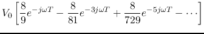
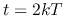
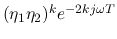

In particular, if
, we have
(*)
Give an input
, we have
Given an input
, we have
 is the time constant of the
circuit. Now we have
is the time constant of the
circuit. Now we have
Consider the response to a unit step
.
At the front of the line we have
 |
If the input is a step , find  :
:
|  |

Next we repeat the above for an impulse input . As the signal only has a finite duration of , at any time  only the term  representing the wave arriving at the back end most recently is non-zero. Therefore we have: